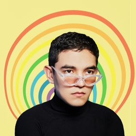
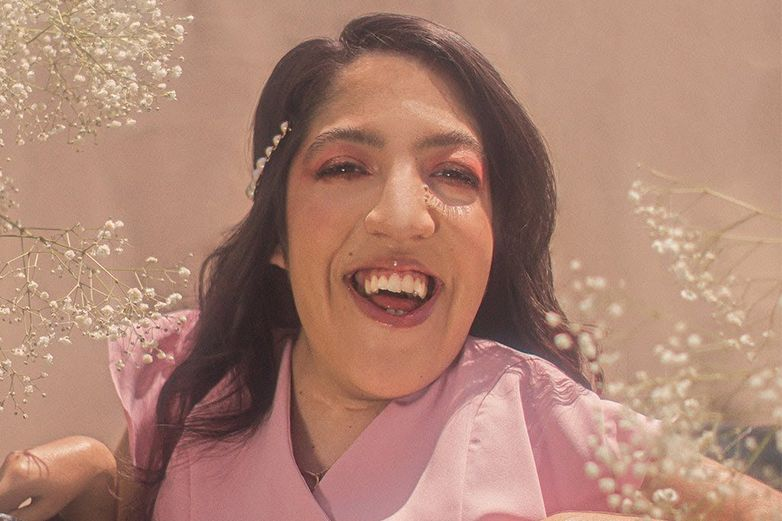
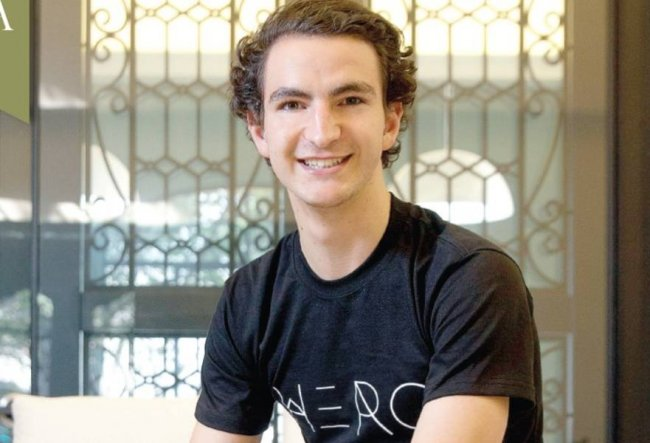

Sináptica es el congreso que el instituto de arquitectura, diseño y arte realiza para sus estudiantes cada año, con invitados especiales, que realizan una conferencia con algún tema en particular, mayormente son diseñadores talentosos, que comparten sus experiencias y que además dan consejos a los futuros diseñadores.
Emmanuel Carvajal
Pintando internet y el mundo de colores.
Emmanuel Carvajal es un fotógrafo que jamás se imaginó que se convertiría en su profesión.
Descubrió su verdadera inspiración para tomar fotografías durante un vieje, ahí descubrió que lo suyo ella tomar fotos llenas de colores; el empezó a publicar su trabajo por medio de Instagram y aunque al principio no le fue como esperaba, más tarde obtendría buenos resultados.
En su presentación en sináptica el comienza dando varios consejos de utilidad para los futuros diseñadores:
- Nunca hay que dudar del trabajo que hacemos, si dudamos de este, como esperamos que den resultados.
- La vida está llena de riesgos y arriesgarse es igual al descubrimiento.
- Ahí que buscar oportunidades grandes.
- Siempre ahí que mostrar como es que nosotros vemos al mundo, nuestra versión de como nos imaginamos cada cosa.
- Si un día queremos hacer algo que desconocemos, mostrar seguridad es lo mejor que podemos hacer.
- Que todo lo que nos rodea puede convertirse en una fuente de inspiración.
- Las herramientas y /o las oportunidades no vienen solas, depende de nosotros crearlas.
- Y siempre hay que mostrar quienes somos.
Ferny Ruíz.
Venciendo miedos y obstáculos.
Es una conferencista, creadora de contenido web, escritora y una activista que lucha por los derechos de las personas discapacitadas.
Menciona que lo primero que ven las personas en ella, no son los logros, sino la historia que hay detrás de todos esos logros. Es por ellos que su conferencia en sináptica habla de los miedos.
Ella menciona que, a pesar de las diferencias físicas, todos los seres humanos nos parecemos:
- Todas las personas tienen sueños, pero muchas no creen en alcanzarlos.
- Todos tienen sueños particulares.
- Es importante creer en los sueños de uno, sin importar lo que los demás digan.
- Siempre, en cualquier sueño que tenga uno, el camino estará lleno de retos.
- Las personas también son iguales en sus miedos.
- Las personas temen al rechazo, y es por eso que en su mayoría se ocultan detrás de una mascara para ser aceptados en la sociedad.
- Las personas por querer encajar olvidan quienes son en realidad.
David Samra.
Los 5 tips para dejar huella en la sociedad.
David menciona que descubrió los 5 hábitos que definen la vida de todas las personas en el mundo.
Nos dice que como personas vivimos en los perjuicios que las personas tienen en nosotros, por ejemplo, si nos dicen que no somos buenos para algo, nosotros no lo creemos y pasamos nuestra vida como si de verdad no fuéramos buenos. Para ello el nos menciona sus 5 tips para tener las riendas para cumplir lo que queremos.
- Demos quitarnos las cuerdas que nos impiden avanzar.
- Demos tomar responsabilidad, si algo esta a nuestro alcance hay que actuar en ese mismo instante y no esperar.
- Demos definir nuestro camino, con voluntad y prestigio, defender nuestra pasión.
- Uno elige como quiere ver las cosas, el sabor que te va a dar, quien te acompañara y disfrutar el momento, aprovecharlo al máximo.
- Estar presentes, vivir en el presente, ver lo que te sucede en el momento.